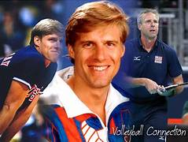

Charles Frederick "Karch" Kiraly (Jackson, Michigan, 3 de Novembro de 1960) é um ex-jogador de voleibol dos Estados Unidos da América. É o único jogador deste desporto - tanto masculino quanto feminino - a ter ganhado a medalha de ouro olímpica nas variantes indoor (quadra) e de praia. É tido por muitos admiradores e jogadores de voleibol como o maior jogador de todos os tempos. Não à toa, no ano de 2000 ele foi eleito o Melhor Jogador de Voleibol do Século XX pela FIVB.

Veja um pouco de seus jogos